GTA IV · 26 records · coverage: partial
Characters — Grand Theft Auto IV
Named characters with role, affiliations and a short summary.
Download characters.json Whole game bundle
| Image | Name | Role | Affiliations | Status |
|---|---|---|---|---|
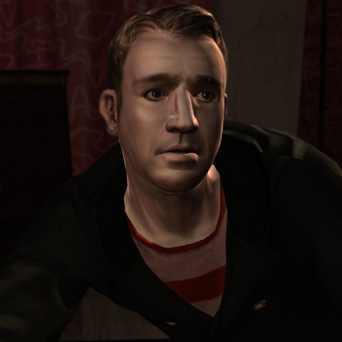 | Bernie Crane | Friend | Liberty City politics | Alive |
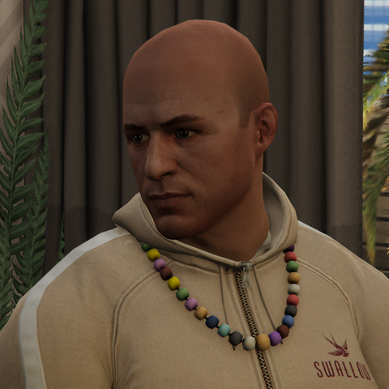 | Brucie Kibbutz | Ally, car dealer | Kibbutz Motors | Alive |
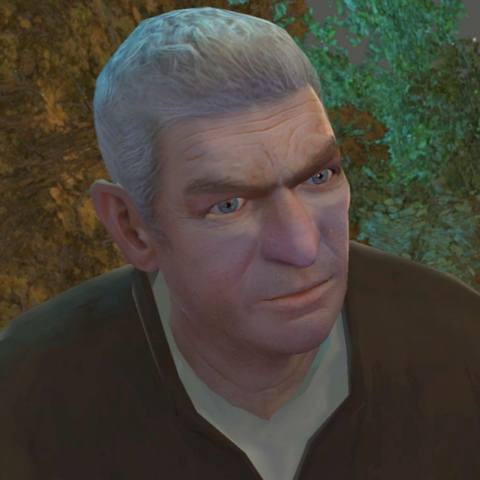 | Derrick McReary | Mission giver | — | — |
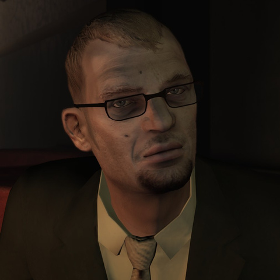 | Dimitri Rascalov | Antagonist | Russian Mafia | Varies |
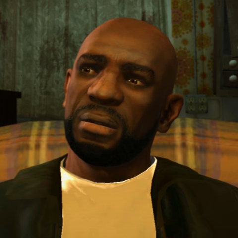 | Dwayne Forge | Ally | North Holland crew | Varies |
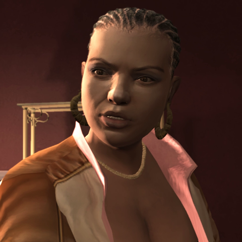 | Elizabeta Torres | Mission giver | — | — |
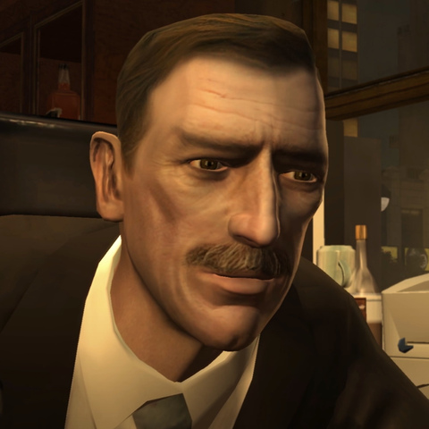 | Francis McReary | Corrupt cop | Liberty City Police Department, McReary Crime Family | Varies |
 | Gerald McReary | McReary patriarch | McReary Crime Family | Alive |
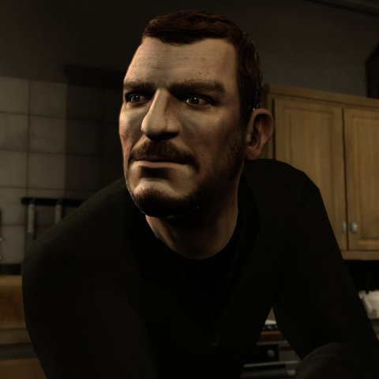 | Gerry McReary | Mission giver | — | — |
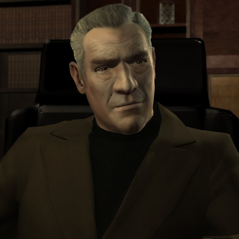 | Jimmy Pegorino | Boss | Pegorino Crime Family | Varies |
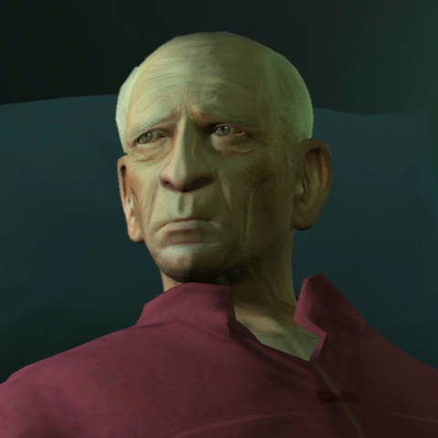 | Jon Gravelli | Mission giver | — | — |
| Kate McReary | Girlfriend | McReary Crime Family | Varies | |
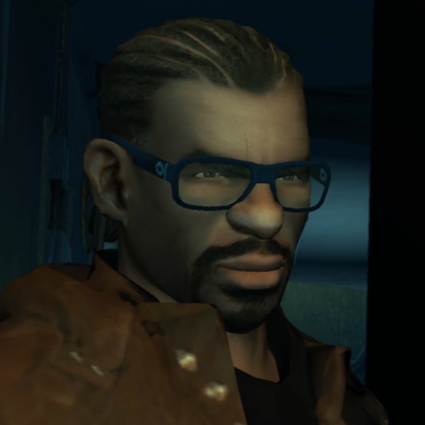 | Little Jacob | Ally, arms dealer | Yardies, Bellic crew | Alive |
| Mallorie Bardas | Mission giver | — | — | |
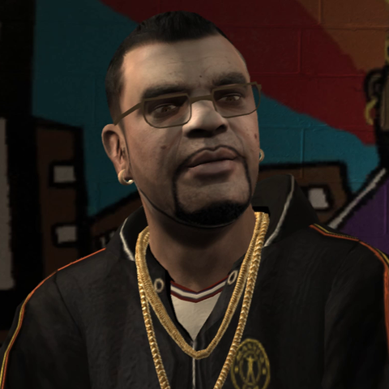 | Manny Escuela | Mission giver | — | — |
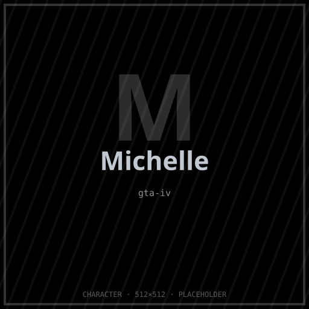 | Michelle | Mission giver | — | — |
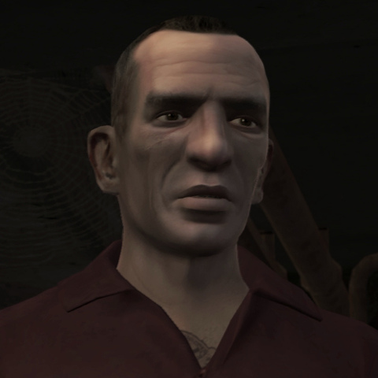 | Mikhail Faustin | Antagonist | Russian Mafia | Deceased |
 | Niko Bellic | Protagonist | Independent, McReary crew (associate) | Varies |
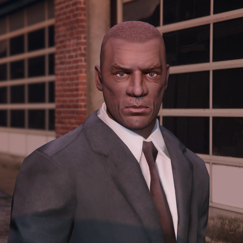 | Patrick 'Packie' McReary | Ally, bank robber | McReary Crime Family | Alive |
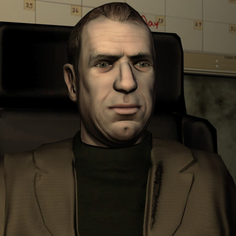 | Phil Bell | Associate | Pegorino Crime Family | Alive |
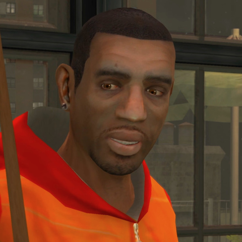 | Playboy X | Ally, drug dealer | North Holland crew | Varies |
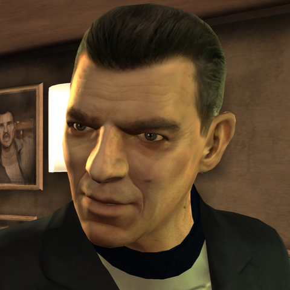 | Ray Boccino | Associate, capo | Pegorino Crime Family | Varies |
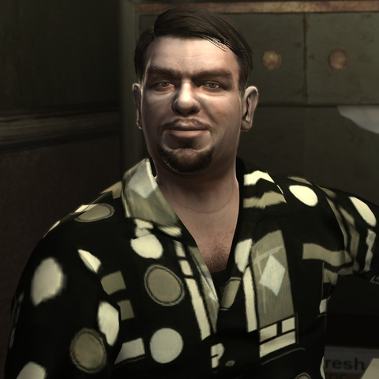 | Roman Bellic | Cousin, taxi depot owner | Bellic Enterprises | Varies |
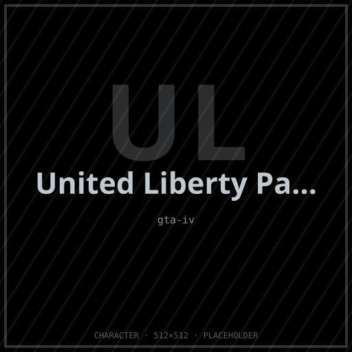 | United Liberty Paper contact | Handler | Federal intelligence | Alive |
 | Vlad Glebov | Mission giver | — | — |
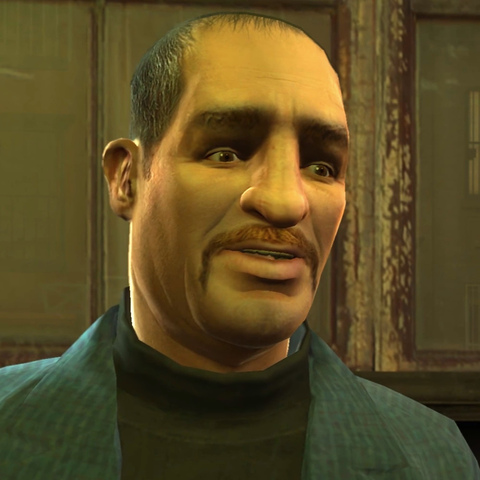 | Vladimir Glebov | Antagonist | Russian Mafia | Deceased |
Field definitions
| Field | Type | Required | Notes |
|---|---|---|---|
name | string | yes | |
role | string | yes | |
affiliations | array | yes | array of strings |
status | string | no | |
summary | string | yes | |
first_appearance | string | no | |
image | string | null | no | |
verified | boolean | yes | |
source | string | no |